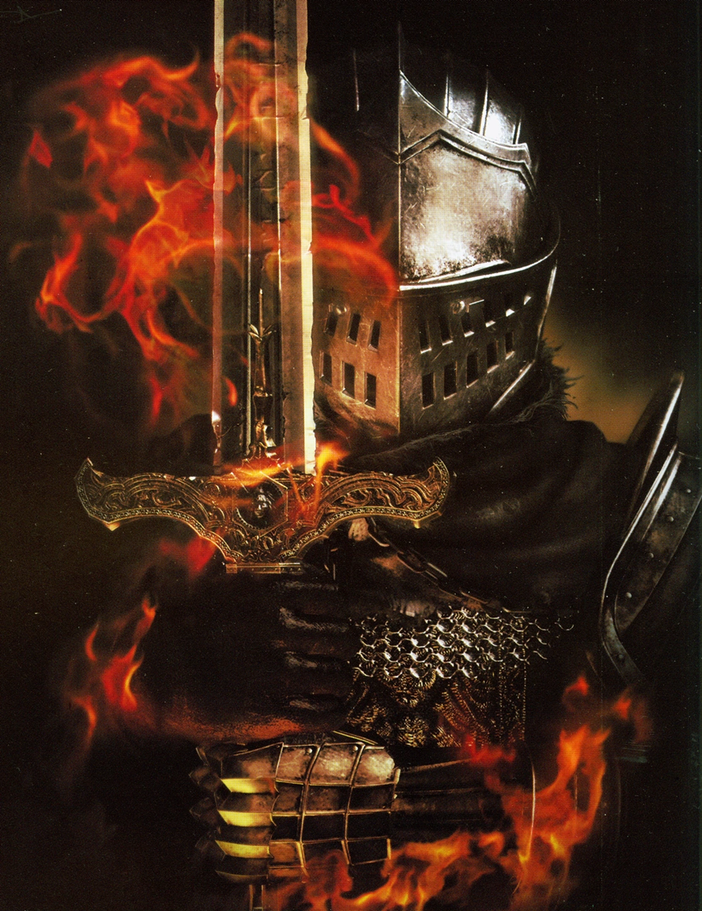

Dark Souls 1
No muerto elegido
El No muerto elegido es el personaje principal y protagonista de Dark Souls 1,
se trata de un "protagonista mudo" ya que durante el juego no emitirá sonidos
excepto suspiros y gemidos cuando es herido o muere
apariencia
En los tráilers, artes conceptuales y artes promocionales, el No muerto elegido
es representado con la armadura "caballero de élite", llevando la "espada recta
de Astora" y el "escudo con emblema".
Sin embargo, en el juego la apariencia y atributos del No muerto elegido
es determinada por el jugador, incluyendo su cara, sexo, origen y equipamiento
Gwyn
Gwyn es uno de los dioses y uno de los personajes más importantes del juego,
siendo nombrado repetidas veces y apareciendo al final como jefe final del juego